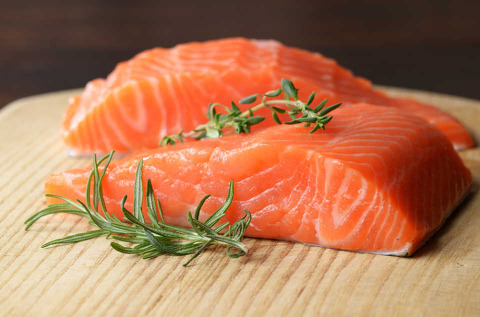
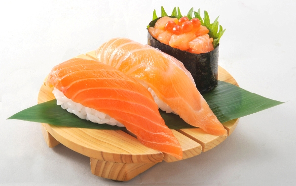
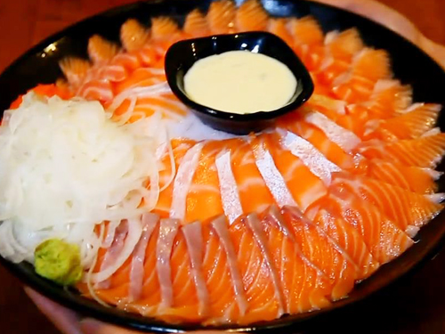
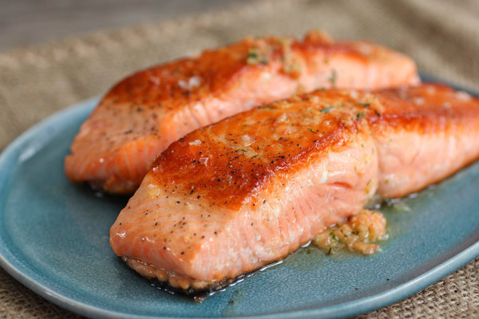
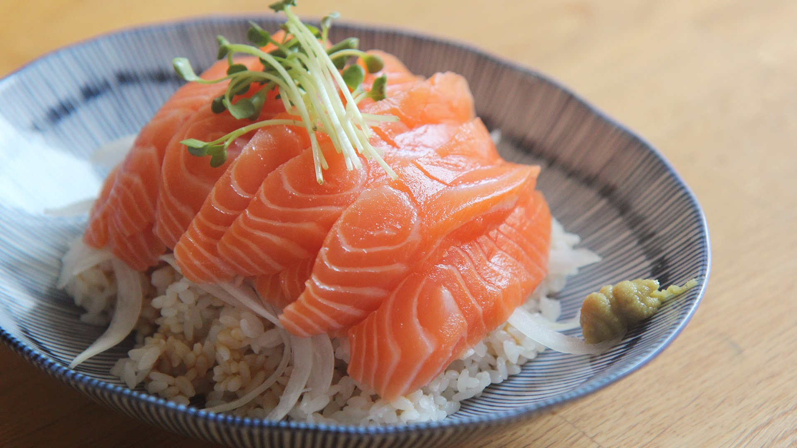
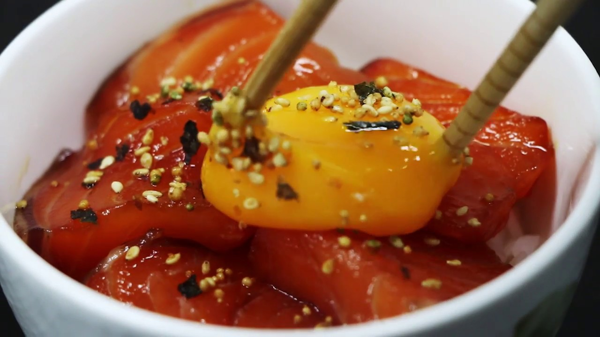

- 세상에서 제일 맛있는 식재료
연어

- 연어는 고급요리 재료로 식탁을 풍성하게 해주는 물고기이다. 고급 레스토랑에서 맛볼 수 있는 훈제, 샐러드, 스테이크로부터 일식 요리인 소금구이까지 요리 방법은 실로 여러 가지이다.
- 연어의 효능
- 연어는 불포화지방산인 '오메가3'가 풍부하여 심장병을 예방하고 혈당수치를 낮춰주는 등 성인병 예방에 좋은 것으로 알려져 있다. 또한 어린이의 두뇌개발에도 도움이 된다. 그 밖에도 체내에 축적된 불필요한 나트륨을 배출시켜 혈관수축을 막아 고혈압을 예방하는 효과가 있다는 칼륨도 풍부하다.
- 연어 요리들

- 연어 초밥

- 연어 회

- 연어 스테이크

- 연어 덮밥

- 연어장